Personaje · reproducción de cuadros
Caminata y máscaras alineadas. Herramienta y ataque tienen cuatro poses distintas; orientación y transiciones necesitan pulido. Las variantes son recoloreados provisionales.
Hoja de contacto
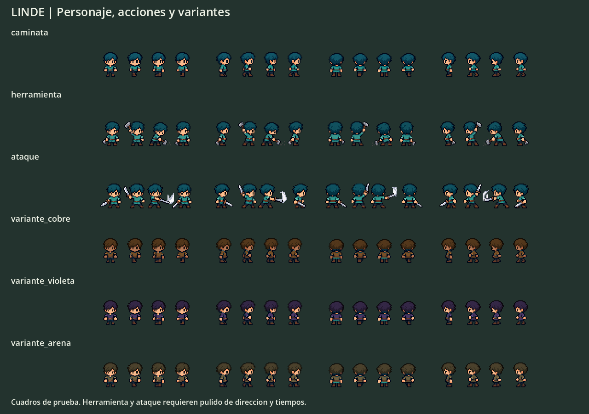
Interfaz
Abrir galería de sección
 madera
madera piedra
piedra fibra
fibra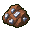
mena_hierro lingote_hierro
lingote_hierro baya
baya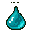
gelatina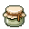
unguento gema
gema hacha_piedra
hacha_piedra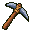
pico_piedra espada_hierro
espada_hierro casco
casco coraza
coraza escudo
escudo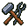
categoria_oficio categoria_exploracion
categoria_exploracion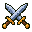
categoria_combate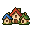
categoria_comunidadmision_icono panel
panel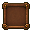
slot_normal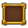
slot_selected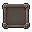
slot_disabled button_normal
button_normal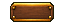
button_hover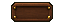
button_pressed healthbar_frame
healthbar_frame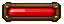
healthbar_fullskill_locked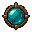
skill_unlocked skill_selectedquest_marker
skill_selectedquest_marker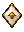
interact_indicator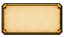
tooltip_panel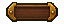
counter_panelhealthbar_fillEquipo
Apariencias estáticas y capas ajustadas de prueba. Falta sincronizar equipo con caminata y pulir agarres/oclusiones. El primer intento de overlays se conserva como rechazado.
Ver capas ajustadas y combinación

Abrir galería de sección
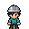
casco_frente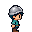
casco_derecha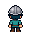
casco_espalda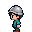
casco_izquierda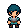
coraza_frente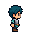
coraza_derecha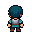
coraza_espalda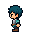
coraza_izquierda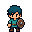
escudo_frente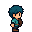
escudo_derecha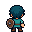
escudo_espalda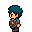
escudo_izquierda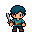
espada_frente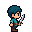
espada_derecha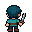
espada_espalda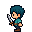
espada_izquierdaMuestra dentro del mapa
La copia ejecutable está en mapa_muestra/. Su lógica se conserva; esta galería no ejecuta el juego.
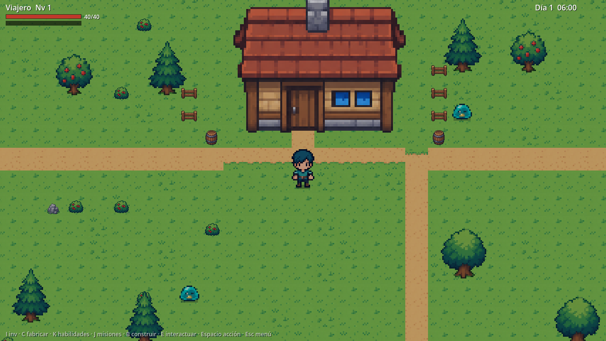